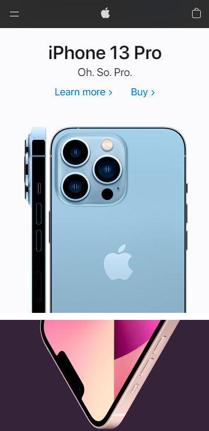
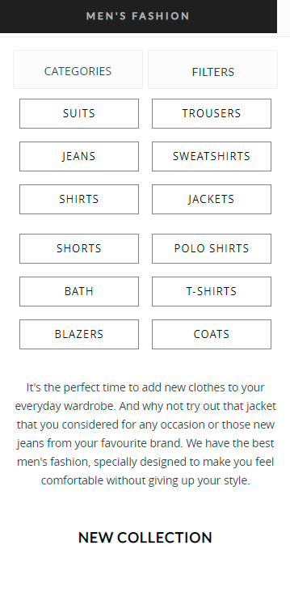

Design Principles Document
Miguel Secades García
White Space and Clean Design
Apple
https://www.apple.com/

The Apple website is a good example of the correct use of white space and clean designs.
Throughout its website, Apple not only uses white space but also strategically places
images to draw attention to its products. A clear, minimalist design, with very good use
of white spaces and that achieves its objective. Draw attention to your product.
Rule of Thirds
Tumblr
https://www.tumblr.com/
In this example we can see how Tumblr makes use of the rule of thirds, placing the login
buttons right in the middle grid, making this the point that captures the most user
attention. If we see the web from a computer, the effect of the thirds is even greater
and more exaggerated, making it clear that it has been a premeditated use of it to capture
the user's attention to what is most important to them, and that is that we log in at
their website.
Hick's Law
El Corte Inglés
https://www.elcorteingles.com/

Hick's Law says that with each additional choice the time required to make a decision increases.
On the El Corte Inglés website, as we can see in the image, they have a filter, with a multitude
of filtering options, to greatly reduce the number of results and thus make it easier for the
user to decide which item to buy.